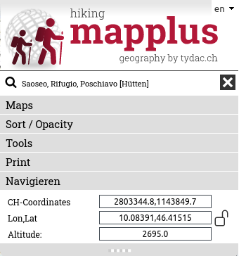
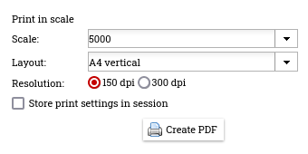
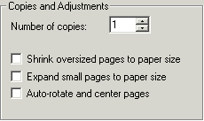
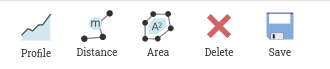
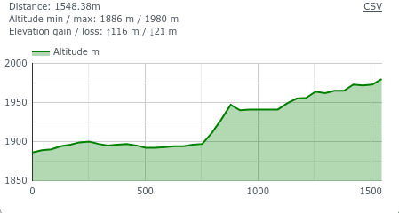
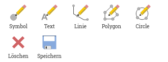

MAP+ Hike - Help
Content
Maps and Functions
Tools
Navigation
To navigate the map you have following options:
- Zoom in/out: mouse wheel , +/- functions, +/- using the keyboard
- Move: click and drag or use the arrow keys
- Zoom window: Hold down shift key, click and drag
- Localization (GPS)
- Initial view: click on "Home" button
Search
You can search after::
- Commune
- Postal Code / Locality
- SwitzerlandMobile Routes and Sections
- Points of Interest such as Hotels, Restaurants etc.
- Local Names, Lakes, Mountain Tops etc. (swissnames by swisstopo, over 400'000 entries)
Hints for a successful search
Type parts of or the full text you are loooking for. Optionally combinde with other text parts. Examples of quick and efficient search techniques:
- City of Chur: chur
- Around Lake Saoseo: saoseo -> Hut, Lake, Local Name, Peak
- Bernina: bernina -> Ospizio, Restaurants, all Routes and Sections of SwitzerlandMobile in the area
- Hotel Sternen Muri: "ster mur"
- Blüemlisalp Mountain Hut: "blü berg"
Coordinate Display and Search

Is the lock open, the coordinates are displayed dynamically when moving the mouse over the map.

Is the lock closed (click on it to do so), the coordinates are only updated when clicking in the map. This will enable you to copy/paste coordinates of a give location.
If you want to search for coordinates, enter the desired pair separated by comma or space and press enter.
Maps
Background Maps

As background you can choose from (can depend on application):
- National maps swisstopo
- National maps winter swisstopo
- National maps vintage swisstopo
- swisstopo TLM by TYDAC (TLM: Topographical Landscape Model)
- OSM++ Switzerland: Enhanced OpenStreetMap-Data
(OSM).
- Aerial image swisstopo swissimage
Database Queries and Downloads of SwitzerlandMobile Data
Click on the "Database" function. SwitzerlandMobile data can be filtered, displayed and downloaded:
Using the table functions, the data can be sorted and filtered as desired, as well in combination with geographic selections (rectangle, polygon). The selected data can be downloaded in different formats: MS-Excel, JSON, XML, CSV, Text, etc.
A detailed description can be found on specific help pages
Additonal Functions
Weitere Funktionen sind:
- Remove all layers
- Google StreetView:
- Navigate in StreetView. The map will be updated accordingly (Position and direction).
- Alternatively, you can move the StreetView object on the map. The closest StreetView recoridng is searched and shown.
- To have more space for the map and StreetView, you can remove the maps selection control (click on the three dots to the left of the map).
- 3D-View of the area
Maps

You can display data of the follwoing topics:
- Hiking and Infrastructure
- SwitzerlandMobile
- SwitzerlandMobile and swisstopo Wintersport
- Gastronomy and Accomodation
- Transportation
- Nature and Einvironmant
- Useful Information
Information Query
Detailed information can be requested for most of the objects on the maps (just click on teh object). Automatically generated profiles are also displayed for all hiking trails and SwitzerlandMobile routes and sections. This information can also be processed to a PDF. The SwitzerlandMobile objects also contain links to information on SwitzerlandMobile.
Example:

Tools
Following tools are available (details see below):
- Measure and profile under "MEASURE"
- Redinling under "DRAW"
Print
 PDF Printing to scale
PDF Printing to scale
The following dialog is shown. Choose scale, layout and resolution:

IMPORTANT: To be able to print to scale you have to deactivate any scaling offered by your PDF software (such as fit or shrink to paper size). Example:

Measure

Profile
 Click on the desired start point and continue clicking any number of intermediate points. To terminate double-click. A profile is generated and displayed in a window - now you can:
Click on the desired start point and continue clicking any number of intermediate points. To terminate double-click. A profile is generated and displayed in a window - now you can:
- Move the mouse over the profile. The position is shown in the map
- Click on the profile to enlarge it, i.e. for printing purposes
You can still add and move points of the distance polyline around, the profile is updated. To terminate the function, click again on the icon, choose any other function or switch to maps or search.

Distance / Area
 Distance
Distance
Click on the desired start point and continue clicking any number of intermediate points. To terminate double-click. After finishing you can still add and move points around. To terminate the function, click again on the icon, choose any other function or switch to maps or search.
 Area
Area
Click on the desired start point and continue clicking any number of intermediate points. To terminate double-click. After finishing you can still add and move points around.To terminate the function, click again on the icon, choose any other function or switch to maps or search.
Delete: Click on the "Delete" button
Save as Bookmark: Measurements can optionally be saved as bookmark. If you save a measurement, there is a tag added to the URL. You can either save the URL as a bookmark or copy the URL and for example send it to someone. In addition to the measurement all map parameters are saved (you can exactly return where you are).
Draw

 Symbols
Symbols
Click on the function to activate it. A choice of symbols will be shown. Choose any of the symbol and start drawing. Repeat as you like. To terminate click on the close button or on any other function. Symbols can be edited and moved any time after finishing. To do so, just click on the symbol, after that drag if you want to move it and/or choose another symbol.
Delete:
- Single symbol: click on the symbol, the on the trash bin in the dialog (no digitizing function should be active to do that)
- all: Click on the "Delete" button
 Text
Text
Click on the function to activate it. The text dialog will be shown. Choose font, size color and enter a text; click in the map to position. Repeat as you like. To terminate click on the close button or on any other function. Text objects can be edited and moved any time after finishing. To do so, just click on the text vertex point, after that drag if you want to move it and/or enter another text, change properties etc.
Delete:
- Single text: click on the text, the on the trash bin in the dialog (no digitizing function should be active to do that)
- all: Click on the "Delete" button
 Lines
Lines
Click on the function to activate it. The line styles dialog will be shown. Choose type, width and color; click any number of points in the map; to finish double-click. Repeat as you like. To terminate click on the close button or on any other function. Line objects can be edited and moved any time after finishing. To do so, just click on the area, after that add vertices, change vertices and/or properties.
Delete:
- Single line: click on the line, the on the trash bin in the dialog (no digitizing function should be active to do that)
- all: Click on the "Delete" button

 Areas / Circles
Areas / Circles
Click on the function to activate it. The area styles dialog will be shown. Choose type, width and colors; click any number of points in the map; to finish double-click. Repeat as you like. To terminate click on the close button or on any other function. Area objects can be edited and moved any time after finishing. To do so, just click on the line, after that add vertices, change vertices and/or properties.
Delete:
- Single area: click on the area, the on the trash bin in the dialog (no digitizing function should be active to do that)
- all: Click on the "Delete" button
Save as Bookmark: Drawing can optionally be saved as bookmark. If you save a drawing, there is a tag added to the URL. You can either save the URL as a bookmark or copy the URL and for example send it to someone. In addition to the drawing all map parameters are saved (you can exactly return where you are).Drawing can optionally be saved as bookmark. If you save a drawing, there is a tag added to the URL. You can either save the URL as a bookmark or copy the URL and for example send it to someone. In addition to the drawing all map parameters are saved (you can exactly return where you are).
Mobile Version
The mobile version for smartphones has a reduced functionality, as follows:
- Background maps
- Add layers
- GPS Localisation
- Turn off all layers
- Zoom to initial view
- Query objects
- Search